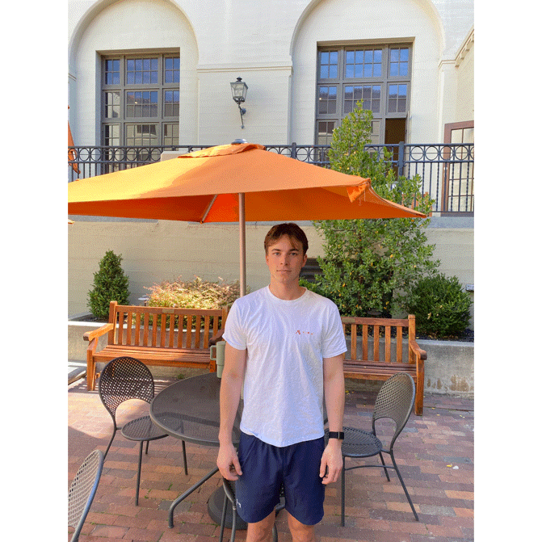
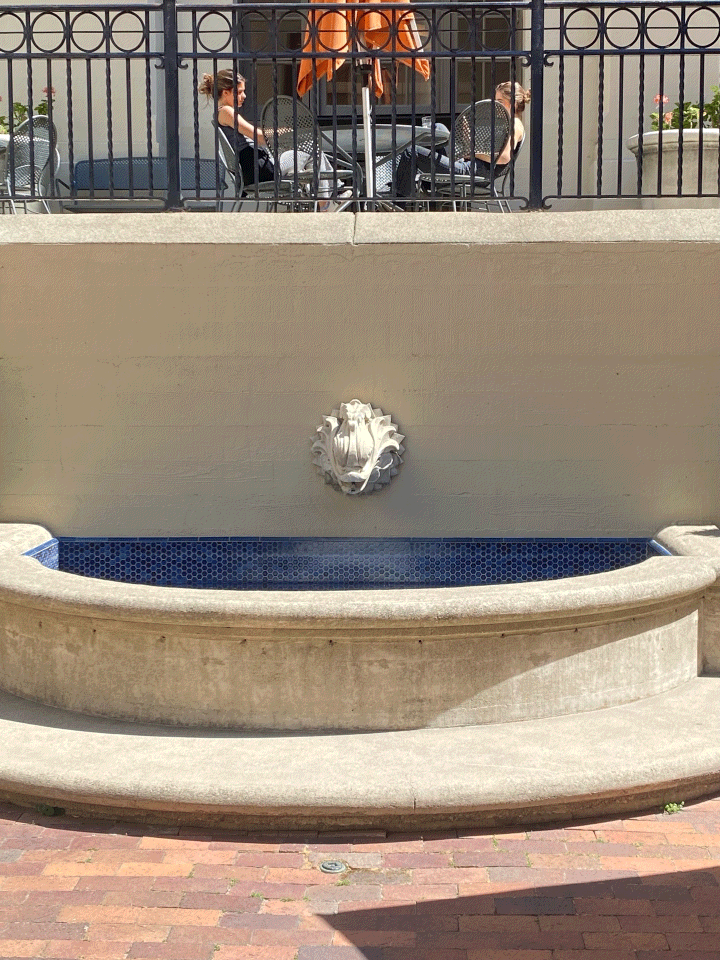
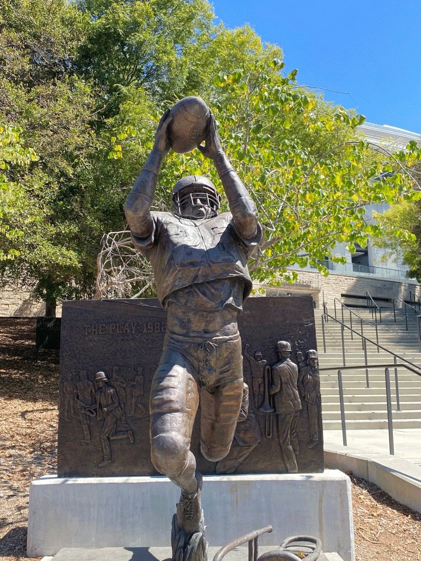

Project Gallery
Part 1: Philip Juenemann
A self-portrait demonstrating the dolly zoom effect, where the camera moves forward while simultaneously zooming out to maintain the subject's size while dramatically changing the background perspective.
Part 2: Fountain
The dolly zoom effect applied to a fountain scene, creating a disorienting visual effect where the background appears to stretch and compress while the central subject remains stable.
Part 3: Statue
A statue captured with the dolly zoom technique, showcasing how the effect can create dramatic tension and focus attention on the central subject while the environment transforms around it.
